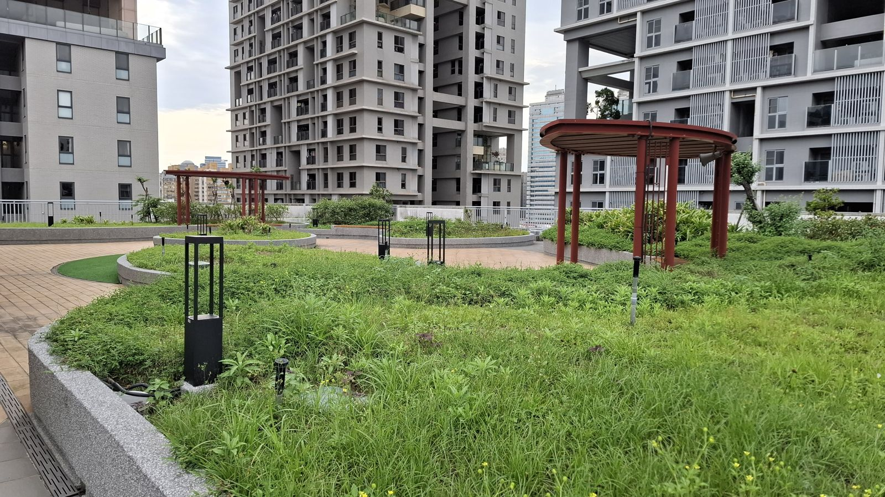

1969廣慈博愛院興建，老人、兒童、婦女集中照顧，後來旁邊還有福德平宅。
1979崇德所的長輩發起募款，請楊英風做了院裡那尊蔣公銅像。
2015–2022都市計畫變更、拆除五棟平宅；園區分成 A 到 E 五大標動工。
2023–2026文物陳列室開幕、社宅陸續入住；2026 年 8 月捷運「廣慈／奉天宮站」通車。

信義區福德街 84 巷・廣慈博愛園區
這塊地以前是廣慈博愛院和福德平宅，收容過被拋下的孩子、無依的老人和需要重新站起來的婦女；現在它是亞洲最大的社福中心加上社會住宅。一個下午跟著社宅住戶、志工中心和婦女中心的主任們，從 7 樓的屋頂花園走到 8 樓的婦女中心，看老院區留下的東西，也看新社宅想怎麼讓不同的人住在一起。
以下照著當天走的順序整理，每站附當天拍的照片，點圖可放大、用方向鍵切換。